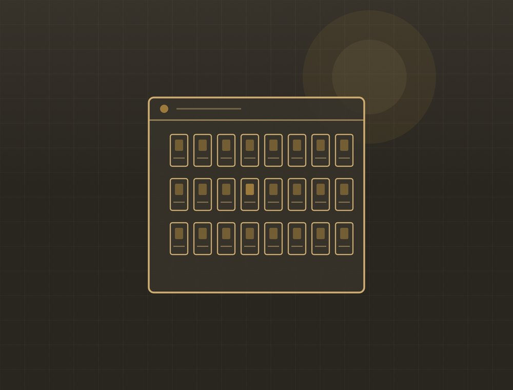
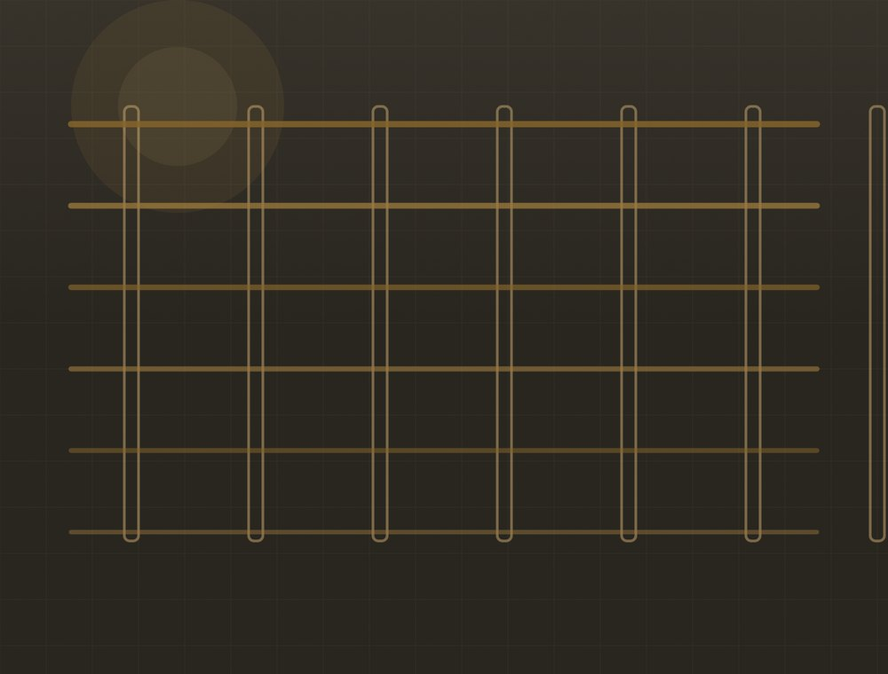
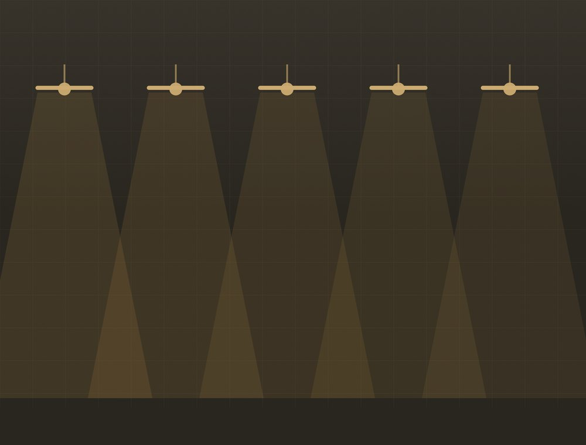
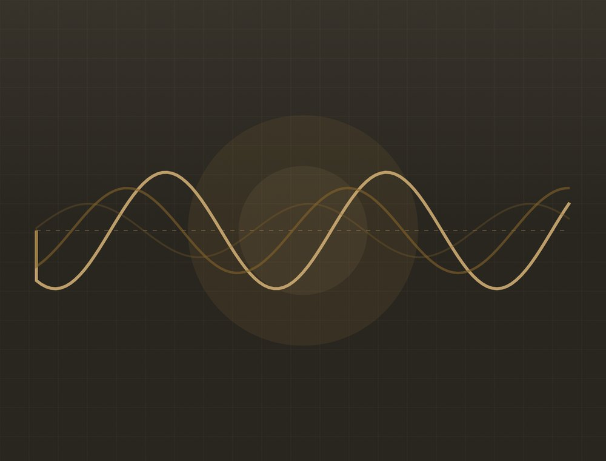

Mitä teemme
Neljä palvelukokonaisuutta. Kaikki voidaan tehdä joko erillisenä työnä tai osana suurempaa kokonaisuutta.
Sähköasennukset uudiskohteisiin

Uuden rakennuksen koko sähköistys: keskus, ryhmäjohdot, pistorasiat, valaistus ja kytkennät. Sovitamme työn yhteen rakennusurakan aikatauluun.
- Sähkökeskus ja ryhmäjohdot
- Pistorasiat ja kytkimet
- Valaistusasennukset
- Antenni- ja tietoliikennekaapelointi
- Käyttöönottotarkastus ja dokumentit
Sähköremontit ja saneeraus

Vanhan sähköjärjestelmän uusiminen kokonaan tai osittain. Käymme kohteen läpi ennen tarjousta, koska vanhoissa taloissa pintojen alla on usein yllätyksiä.
- Koko asunnon sähköremontti
- Keskuksen uusiminen
- Vanhan johdotuksen vaihto
- Lisäpistorasiat ja -ryhmät
- Kylpyhuoneen sähköt
Valaistus

Valaistuksen suunnittelu ja asennus sisälle ja ulos. Vanhan valaistuksen vaihto vähemmän sähköä kuluttavaan on usein nopeimmin takaisin maksava työ.
- Sisävalaistus ja spotit
- Piha- ja julkisivuvalaistus
- Ohjaukset ja himmentimet
- Valaistuksen uusiminen
Vikakorjaukset ja mittaukset

Kun sulake palaa toistuvasti tai jokin ei toimi, vika etsitään mittaamalla. Kerromme mitä löytyi ja mitä korjaus maksaa ennen kuin teemme sen.
- Vianetsintä ja mittaukset
- Sulake- ja keskusviat
- Kosteus- ja maadoitusviat
- Määräaikaistarkastukset
Kysymyksiä
Saako sähkötyöstä kotitalousvähennystä?
Asunnossa tehdyn sähkötyön työosuudesta voi tietyin edellytyksin saada kotitalousvähennystä. Uudisrakentaminen ei oikeuta vähennykseen. Voimassa olevat ehdot ja enimmäismäärät löytyvät osoitteesta vero.fi.
Mitä dokumentteja työstä jää?
Sähköasennuksista tehdään käyttöönottotarkastus ja siitä pöytäkirja. Säilytä se — sitä kysytään asunnon myynnin ja vakuutusasioiden yhteydessä.
Voinko tehdä sähkötyöt itse?
Osa pienistä töistä on sallittu maallikolle, mutta kiinteät asennukset, keskustyöt ja ryhmäjohdot vaativat sähköpätevyyden. Väärin tehty asennus on paloriski ja voi vaikuttaa vakuutuskorvaukseen.
Kuinka nopeasti pääsette liikkeelle?
Se riippuu työtilanteesta ja kohteesta. Soita, niin kerromme suoraan milloin pystymme aloittamaan — emme lupaa aikataulua, jota emme pidä.
Kerro mitä tarvitset
Soita tai lähetä tarjouspyyntö. Käydään kohde läpi ja katsotaan, miten se kannattaa tehdä.